Cómo se genera la electricidad
La energía eléctrica es una forma de energía que se produce mediante la generación y el flujo de electrones a través de un circuito eléctrico. Como no se puede generar energía de la nada, para "generar" energía eléctrica lo que hacemos en realidad es transformar energía de algún otro tipo en energía eléctrica.
Es una de las formas de energía más versátiles y ampliamente utilizadas en todo el mundo. Su importancia podemos comprobarla en diferentes aspectos:
- Desarrollo socioeconómico: la energía eléctrica impulsa el crecimiento económico y el desarrollo industrial. Es un requisito fundamental para la mayoría de las actividades comerciales y empresariales. Facilita la automatización de procesos, mejora la eficiencia en la producción y contribuye a la creación de empleo en diversos sectores, como la manufactura, la agricultura, la tecnología y los servicios.
- Mejora de la calidad de vida: brinda comodidad y mejora la calidad de vida de las personas. Permite iluminación, calefacción, refrigeración, comunicación, entretenimiento y acceso a dispositivos electrónicos. Además, también es vital en el ámbito de la salud, ya que proporciona energía para equipos médicos, hospitales, centros de atención y refrigeración de medicamentos.
- Transporte y movilidad: ofrece una alternativa más limpia y sostenible a los combustibles fósiles, reduciendo las emisiones de gases de efecto invernadero y mejorando la calidad del aire. Los sistemas de transporte eléctrico también pueden ayudar a reducir la dependencia de los combustibles no renovables.
- Sostenibilidad y medio ambiente: la generación de energía eléctrica a partir de fuentes renovables contribuye a la mitigación del cambio climático y a la conservación de los recursos naturales. Las fuentes renovables, como la energía solar y eólica, generan electricidad sin emisiones significativas de gases de efecto invernadero.
Dado que juega un papel esencial en nuestra sociedad moderna y desempeña un papel fundamental en nuestra vida diaria, es importante que conozcamos cómo transformar otros tipos de energía en energía eléctrica.
Clasificaremos las formas de generar energía eléctrica según el origen de la energía que utilicemos como fuente. En concreto, distinguiremos fuentes de energía no renovable (es decir, que se agotarán a medio o largo plazo) y fuentes de energía renovables (que no se agotarán por más que las usemos, al menos, mientras exista la civilización humana).
Centrales térmicas convencionales
Las centrales térmicas convencionales convierten la energía térmica obtenida al quemar un combustible fósil en energía eléctrica.
Para ello, utilizan como paso intermedio energía mecánica. Esquemáticamente, las transformaciones energéticas que tienen lugar en una central térmica convencional son las siguientes:
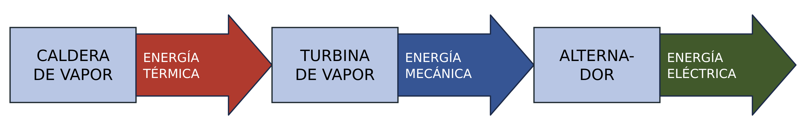
AmpliarEl agua del circuito principal siempre es la misma porque está encerrada en un circuito cerrado y ahí va pasando de estado líquido a gaseoso (y viceversa) una y otra vez. Puedes verlo en la simulación de la central térmica de esta página.
Tipos de centrales térmicas convencionales
Según el combustible que se queme en la caldera, podemos tener centrales de carbón (sólido), de fuel (líquido) o de gas natural (gaseoso). La diferencia entre estos tipos de centrales está sobre todo en la parte de la caldera y en la forma de alimentar el combustible y de disponer de los residuos si los hay.
A continuación, vamos a hacer un análisis de los diferentes tipos de combustibles usados por estas centrales:
Carbón
El carbón es un combustible sólido, de color negro compuesto fundamentalmente por carbono. Lleva además H, N, O, etc. en pequeñas proporciones. Procede de la fosilización de restos orgánicos vegetales.
En las centrales térmicas se utiliza carbón mineral. Según la cantidad de carbono y la antigüedad del carbón, existen diferentes tipos de carbón:
| Tipo | Antracita | Hulla | Lignito | Turba |
|---|---|---|---|---|
| Carbono aproximado | 95 % | 85 % | 75 % | 50 % |
| Poder calorífico (kcal/kg) | 8000 | 7000 | 6000 | 2000 |
| Antigüedad | Era Primaria | Era Primaria | Era Secundaria | Muy reciente |
Centrales eléctricas de carbón
Las centrales térmicas de carbón tienen una serie de dispositivos e instalaciones para procesar el carbón que llega e introducirlo en la caldera, así como para disponer de los residuos sólidos de la combustión. En la siguiente imagen tienes una central de carbón con la denominación e indicación de muchas de sus instalaciones:
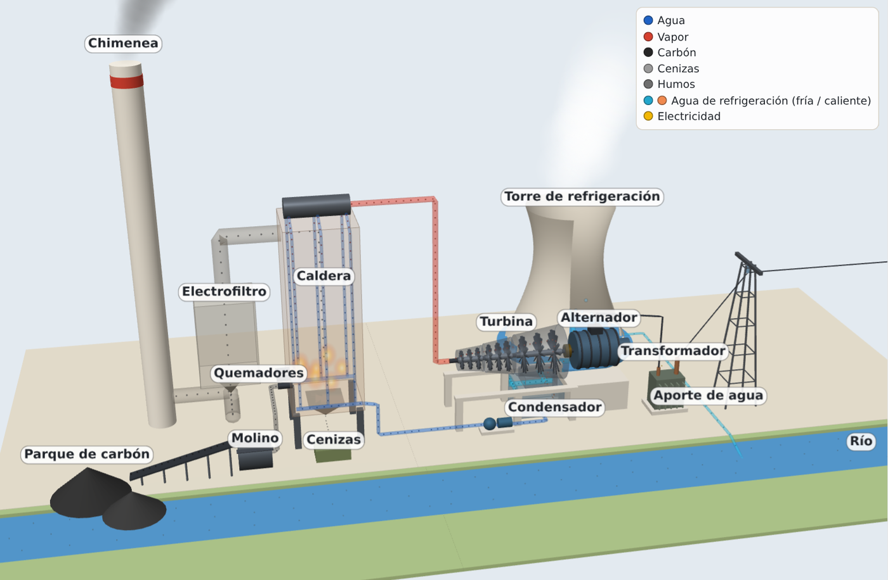
AmpliarComo ves, es necesario disponer de un molino para pulverizar el carbón en partículas diminutas, maximizando de esta forma la cantidad de carbono que queda en contacto con el O2 para producir la reacción de combustión.
En esta otra imagen tienes un esquema simplificado con las partes más importantes de una central térmica de carbón y una breve explicación de lo que ocurre en cada una de ellas, para que tengas la idea de cómo funciona:
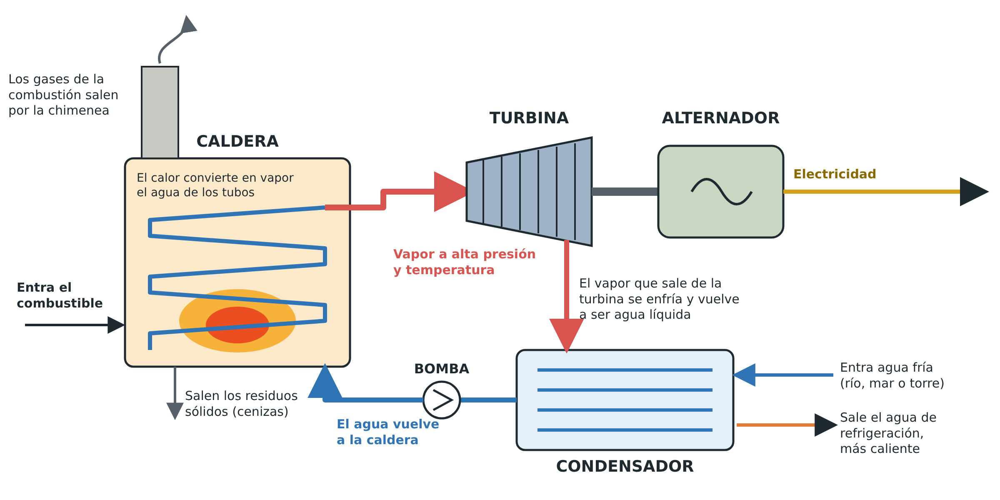
AmpliarPetróleo
El petróleo es una mezcla homogénea de compuestos orgánicos, principalmente hidrocarburos (moléculas de carbono e hidrógeno) y pequeñas proporciones de nitrógeno, azufre, oxígeno y algunos metales. Es insoluble en agua. También es conocido como petróleo crudo o simplemente crudo.
Origen del petróleo
Se presenta de forma natural en depósitos de roca sedimentaria y sólo en lugares en los que hubo mar. Procede de la fosilización de restos de plantas y animales (sobre todo, plancton marino), sometidos a altas temperaturas y a grandes presiones de las capas de la tierra. Es un compuesto líquido que se filtra a través de rocas porosas hasta encontrar una roca impermeable (por ejemplo, arcillas) que lo retiene. En la parte superior del depósito de petróleo siempre aparece una masa de gas natural.
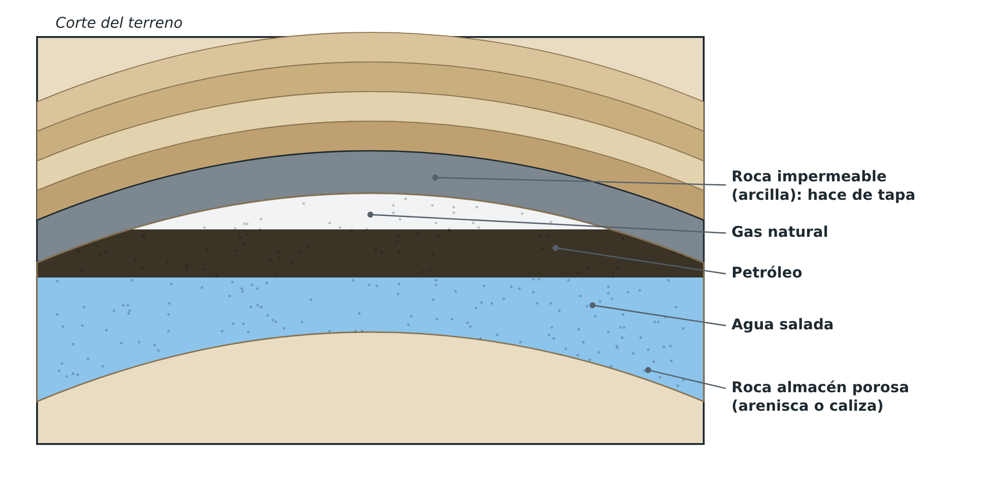
AmpliarPozos y extracción
Una vez localizados los yacimientos de petróleo, se procede a la perforación mediante tubos perforadores. Si el tubo perforador llega a la bolsa de gas y se detiene sin llegar a la capa de petróleo, sube un chorro violento de gas. Si el tubo perforador penetra en el petróleo, éste asciende empujado por el gas y el agua comprimida. A medida que sale el petróleo, va disminuyendo la presión y puede ser necesario introducir bombas para poder subir el petróleo restante a la superficie.
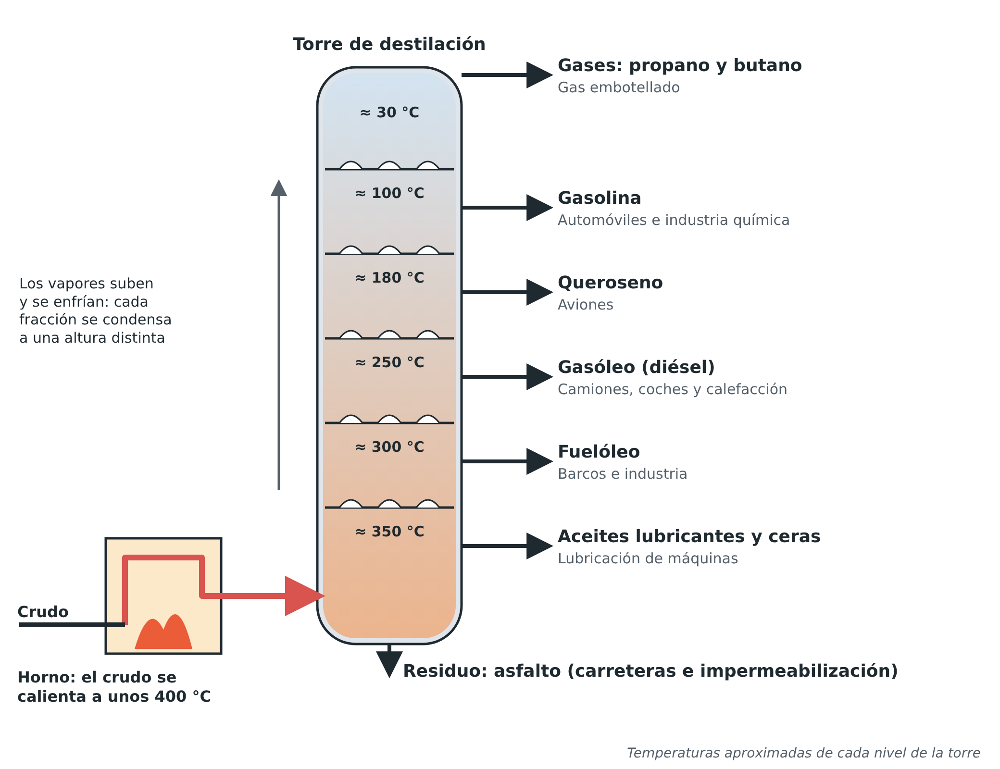
AmpliarDestilación fraccionada
El petróleo natural no se usa como se extrae de la naturaleza, sino que se separa en los diferentes hidrocarburos que lo forman. Para ello se utiliza la técnica de la destilación fraccionada.
Se utiliza un horno (torre de refino) a una temperatura de unos 400 °C. Se introduce el petróleo crudo en la parte baja de la torre y todas las sustancias que se evaporan a esa temperatura pasan como vapores a la cámara superior, algo más fría, mientras se condensan las fracciones más pesadas que corresponden a los aceites.
Continúan a la próxima cámara aquellas sustancias que todavía a esa temperatura son gases, para condensar parcialmente en la fracción de fuel oil. A continuación, en la siguiente cámara algo más fría, condensan los combustibles diésel.
Este proceso de condensación en fracciones de acuerdo al punto de ebullición se continúa ascendentemente por la torre hasta que, al final, por la parte superior salen los gases que no condensan a temperatura ambiente.
Craqueo
Cuando la necesidad de un producto es mayor que la de otros, como es el caso de la gasolina, se utiliza la técnica del craqueo. El craqueo consiste en calentar un hidrocarburo a alta temperatura (unos 450-750 °C), a menudo con ayuda de un catalizador, para romper sus moléculas y obtener otras moléculas de menor peso que coincidan con los hidrocarburos de mayor demanda.
Centrales eléctricas de fuel-oil
Hace años, el fuel-oil era muy utilizado como combustible para generar electricidad en las centrales eléctricas debido a sus ventajas sobre los otros tipos de combustibles fósiles: es más fácil de transportar que el carbón, pues se puede circular a través de oleoductos y es más seguro de almacenar en tanques que el gas natural.
Sin embargo, el gran alza de precios que sufrió el petróleo en la década de 1970 hizo que se fuera abandonando y hoy en día hay pocas plantas que utilicen este combustible para la generación eléctrica. Se utiliza casi exclusivamente en pequeñas centrales que se encienden en momentos de picos de demanda o para ajustar la potencia del sistema.
Gas Natural
El gas natural es una mezcla homogénea, en proporciones variables, de hidrocarburos gaseosos a temperatura ambiente. Su principal componente es el metano (CH4) aunque también posee etano, propano y algunas impurezas.
El gas natural está asociado casi siempre a los yacimientos de petróleo, sin embargo, hay pozos que proporcionan solamente gas natural.
El gas se guarda en almacenamientos subterráneos (yacimientos agotados o capas profundas de roca porosa) y en los tanques de gas licuado de las plantas regasificadoras, y se lleva a los lugares de consumo mediante tuberías (gasoductos) o como gas natural licuado (GNL), en buques metaneros y en camiones cisterna criogénicos. Para licuarlo no se comprime: se enfría a unos −162 °C, y así viaja a presión casi atmosférica. Los que se licúan por presión son el butano y el propano.
Gas natural húmedo y seco
El gas natural, tal como sale del yacimiento, es sobre todo metano, pero puede llevar también hidrocarburos más pesados, como el etano, el propano y el butano. Si lleva una cantidad apreciable de ellos se llama gas húmedo; si es casi todo metano, gas seco. Antes de emplearlo como combustible se le extraen los hidrocarburos más pesados, como el butano y el propano, y el gas que queda, metano en su mayor parte, se distribuye a usuarios domésticos e industriales.
Centrales eléctricas de gas
En la actualidad, el gas es en España el combustible fósil más usado para generar electricidad (en el mundo sigue siéndolo el carbón). Además de ser más económico que el fuel oil, contiene muchas menos impurezas que el carbón y, por lo tanto, contamina mucho menos que éste.
En la siguiente imagen puedes ver una central térmica, pero en este caso de gas en vez de carbón. Como ves, la principal y casi única diferencia está en la forma en que se alimenta de combustible la caldera:
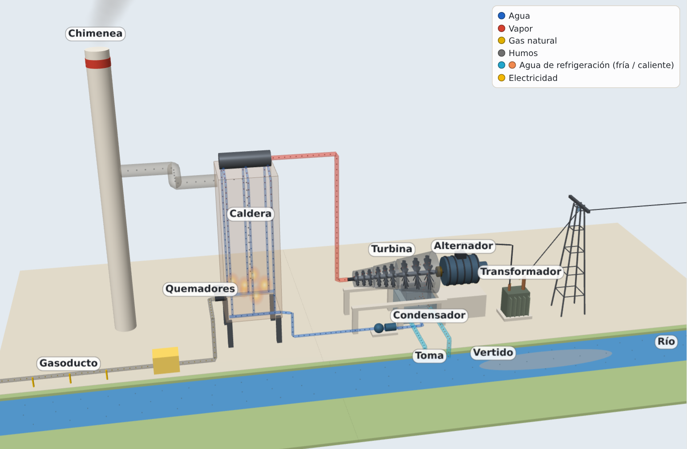
AmpliarRefrigeración de las centrales térmicas
Como ya has visto en los diferentes esquemas de funcionamiento, en estas centrales es necesario enfriar el vapor que sale de la turbina para condensarlo en forma de agua líquida y bombearlo de vuelta a la caldera. Esto se realiza en un intercambiador de calor llamado condensador.
El condensador necesita un aporte de agua fría para poder evacuar el calor del fluido de la central. Dependiendo de la localización de la central y de su potencia, esta agua líquida puede extraerse de:
- El mar: las centrales térmicas situadas en la costa disponen de una gran masa de agua fría para refrigerarse. Se toma agua del mar (mediante tuberías subacuáticas protegidas por rejillas y filtros), se utiliza para enfriar el condensador y se devuelve al mar, normalmente mediante una tubería que se adentra varios metros en el mar.
- Algún río caudaloso cercano: Aunque la central esté lejos de la costa, puede que esté situada a orillas de algún río caudaloso. En ese caso, se extrae agua fría del río mediante una tubería, se utiliza para refrigerar el condensador y se vuelve a verter al río. Esta agua no se mezcla con nada de la central por lo que no se contamina, pero hay que tener en cuenta que sale más caliente y que, si el río no es lo suficientemente caudaloso o la central es muy potente (y el agua se calienta demasiado), se podría producir un aumento de la temperatura del río que podría afectar a los peces y las plantas que vivan en él. Por eso esta solución no siempre es viable.
- Torres de refrigeración: si no es posible refrigerar mediante el mar o algún gran río, o es necesario enfriar el agua antes de devolverla al río para evitar sobrecalentarlo, no queda más remedio que construir un sistema para poder refrigerar el agua con aire antes de devolverla al exterior (evitando así el impacto ecológico). Este sistema consiste en una gran torre en la que el agua caliente que sale del condensador se pulveriza y cae hacia la base, mientras una corriente de aire sube por la torre. Una pequeña parte del agua se evapora y se lleva buena parte del calor: ese vapor sale por arriba con el aire y forma el penacho blanco que se ve sobre las torres. El agua que no se ha evaporado se recoge ya enfriada en la base de la torre, y desde allí puede devolverse al río o lago correspondiente, o bien volverse a enviar al condensador de la central. Como el agua que se evapora se escapa “volando” en forma de nube, hay que seguir teniendo un aporte constante.
Aquí tienes un ejemplo de central refrigerada mediante torre:
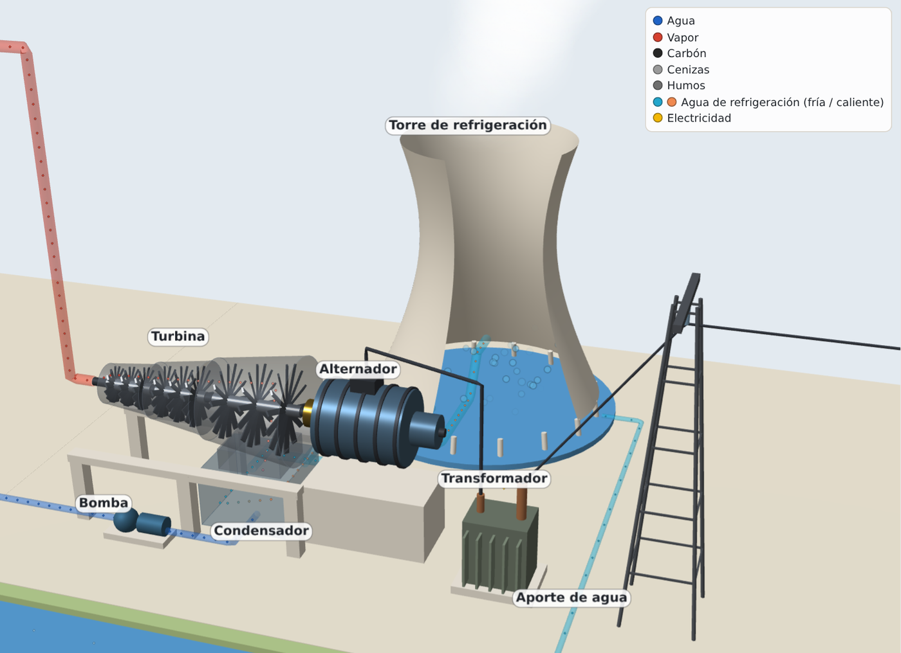
AmpliarSimulación: una central térmica por dentro
En esta simulación puedes recorrer una central térmica de carbón, de fuel o de gas, y también una central nuclear de agua a presión (PWR) o de agua en ebullición (BWR): en todas, el calor produce vapor que mueve una turbina; lo que cambia es de dónde sale ese calor. Elige el combustible y la refrigeración, cambia la potencia y los rendimientos y mira cuánto combustible y cuánta agua de refrigeración hacen falta. Pulsa «Iniciar simulación 3D»; arrastra para girar el modelo y acércate con la rueda del ratón o pellizcando la pantalla. Con los botones de vista vas directamente a cada parte.
Prueba a…
- Comparar los cuatro tipos de carbón con la misma potencia: ¿con cuál se queman más toneladas al día? ¿Por qué?
- Cambiar la refrigeración entre mar, río y torre y seguir el camino del calor que no se convierte en electricidad.
- En la central nuclear, pulsar «Disparo del reactor» y adelantar el reloj: ¿por qué hay que seguir refrigerando cuando ya no se produce electricidad?
- Escribir los datos de un ejercicio de centrales térmicas y comprobar tu resultado en «Cálculo paso a paso».
Sistemas de mejora del rendimiento
Las centrales térmicas generan un tipo de energía de muy "alta calidad" (energía eléctrica) a partir del tipo de energía de "menor calidad" (energía térmica). Eso hace que el rendimiento de estas instalaciones sea muy malo y tengamos que intentar maximizarlo por todos los medios.
Nota
Cuando hablamos de «calidad de la energía» nos referimos en realidad a su nivel de entropía: el calor es la forma de energía de mayor entropía o, lo que es lo mismo, la más degradada.
Existen varias técnicas para mejorar el rendimiento de estas instalaciones. En este vídeo puedes ver con detalle el funcionamiento de una central térmica de carbón y se comentan la mayoría de las técnicas que se emplean para maximizar el rendimiento:
Impacto ambiental
Todas estas centrales generan emisiones de gases que afectan gravemente al medio ambiente:
- Gases de efecto invernadero (CO2) (todas)
- Gases tóxicos (CO) y que producen lluvia ácida (SOx y NOx) (sobre todo las de carbón y fuel)
- Partículas venenosas y cancerígenas en suspensión si no se realiza un filtrado exhaustivo de los gases antes de emitirlos (sobre todo las de carbón)
Las centrales de carbón, además, generan cenizas como producto de la combustión que tienen que ser tratadas convenientemente para evitar contaminación del terreno y/o acuíferos.
Las centrales de carbón y de fuel son muy contaminantes y peligrosas para la salud de las personas, los animales y las plantas. Las centrales de gas son más “limpias” en este sentido, pero siguen emitiendo toneladas de CO2 que, si bien no es un gas tóxico, contribuye muy negativamente al cambio climático.
Por eso el objetivo es ir prescindiendo de estas centrales y sustituirlas por otras más respetuosas con el medio ambiente. En España el carbón ya es residual: la mayoría de las centrales han cerrado, quedan unas pocas de respaldo en proceso de cierre y otras se han reconvertido a gas, como uno de los grupos de la asturiana de Aboño. El fuel se usa sobre todo en los sistemas eléctricos aislados de Canarias, Baleares, Ceuta y Melilla, y el gas se quema hoy principalmente en centrales de ciclo combinado, que son las que veremos a continuación.
Centrales térmicas de ciclo combinado
Como has visto, las centrales térmicas convencionales contaminan y, además, gastan combustibles no renovables que se agotarán algún día. Por eso, las grandes centrales de gas que se construyen hoy son casi siempre centrales de ciclo combinado. Son un tipo de central que utiliza dos tipos de turbinas diferentes:
- Una turbina de gas: un compresor aspira aire y lo comprime; en la cámara de combustión se quema el gas natural con ese aire, y los gases calientes, a gran presión, mueven la turbina (ciclo de Brayton). Entre el 40 y el 60 % del trabajo de la turbina se gasta en mover el compresor.
- Una turbina de vapor, como en las centrales convencionales (ciclo de Rankine), pero el vapor se produce en una caldera de recuperación con el calor de los gases que salen de la turbina de gas, a unos 600 °C. Así se aprovecha un calor que, si no, se perdería: los gases salen por la chimenea a unos 80-90 °C.
La turbina de gas produce unos dos tercios de la electricidad y la de vapor, el tercio restante. En muchas centrales las dos turbinas y el alternador están en el mismo eje, como en la imagen; un embrague permite arrancar primero la turbina de gas y acoplar la de vapor cuando ya hay vapor.
Para cubrir puntas de pocas horas también hay centrales de turbina de gas sola (ciclo abierto): arrancan antes y cuestan menos, pero su rendimiento es de un 40 %.
En la siguiente imagen puedes ver un esquema de funcionamiento de este tipo de centrales:
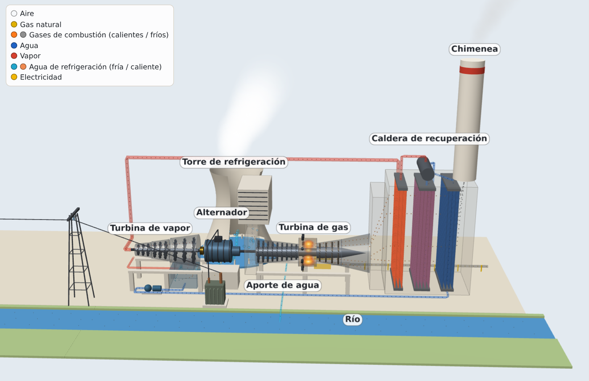
AmpliarFíjate en la caldera de recuperación: el vapor no se produce quemando más gas, sino con el calor de los gases que salen de la turbina de gas, a unos 600 °C.
Al final de este apartado tienes una simulación para ver con detalle cómo funcionan estas centrales.
Ventajas de los ciclos combinados
Las ventajas de estas centrales respecto de las convencionales son muchas:
- Son más flexibles: pueden operar a diferentes cargas, según se necesite generar más o menos electricidad en cada momento, por lo que son muy útiles para las puntas de carga. Si están calientes, pasan de paradas a plena carga en unos 30-40 minutos; una térmica de carbón tarda unas 2 horas.
- Son más eficientes: superan el 60 %, frente al 35-45 % de las térmicas de carbón. Por ello, gastan menos combustible para una potencia similar. La más eficiente del mundo llega al 64 % (Keadby 2, Reino Unido, 2024).
- Tienen menos emisiones. Al ser más eficientes, emiten menos CO2 por cada kWh generado que las térmicas convencionales: unos 350 g de CO2 por kWh, frente a unos 1000 g de una térmica de carbón.
- Necesitan menos agua de refrigeración. Otra consecuencia de su mayor eficiencia y de que solo la turbina de vapor necesita condensador: solo un tercio de la electricidad sale del ciclo de vapor.
- Se construyen más rápidamente y ocupan menos espacio que las convencionales.
En España hay unos 26 GW de ciclos combinados, que en 2025 produjeron el 16,8 % de la electricidad, sobre todo cuando no hay suficiente sol ni viento.
Simulación: central de ciclo combinado
Aquí tienes una central de ciclo combinado con la turbina de gas, el alternador y la turbina de vapor en el mismo eje. Sigue el aire y el gas por la turbina de gas, mira cómo los gases calientes que salen de ella producen el vapor en la caldera de recuperación y compárala con una turbina de gas sola. Pulsa «Iniciar simulación 3D»; arrastra para girar el modelo y acércate con la rueda del ratón o pellizcando la pantalla. Con los botones de vista vas directamente a cada parte.
Prueba a…
- Pasar de «Ciclo combinado» a «Turbina de gas sola (ciclo abierto)» con la misma potencia: ¿cuánto gas y cuánto CO2 de más hacen falta? ¿A qué temperatura salen ahora los gases por la chimenea?
- Pulsar «Arranque en caliente» y anotar en qué orden se ponen en marcha las dos turbinas.
- Buscar en «Cálculo paso a paso» de dónde sale un rendimiento de más del 60 %.
Centrales nucleares de fisión
Este tipo de centrales utiliza el calor producido por una reacción de fisión de núcleos de uranio para generar vapor que moverá una turbina (al igual que en las centrales térmicas convencionales).
Fisión nuclear
La fisión nuclear es una reacción que consiste en romper núcleos de átomos pesados y dividirlos en otros átomos más ligeros. Cuando se produce una fisión, se observa un “defecto de masa” (la suma de las masas de los núcleos restantes es menor a la masa del núcleo original). Esta parte de la masa del átomo que falta se ha transformado íntegramente en energía, según la ecuación de Einstein, \(E = m\cdot c^{2}\).
Reacción en cadena
Para fisionar un núcleo de un átomo pesado se bombardea con un neutrón. Cuando el átomo se rompe, se liberan a su vez otros neutrones, que pueden romper otros átomos cercanos. Se puede producir así una reacción en cadena, que acabe por fisionar de golpe trillones de átomos pesados.
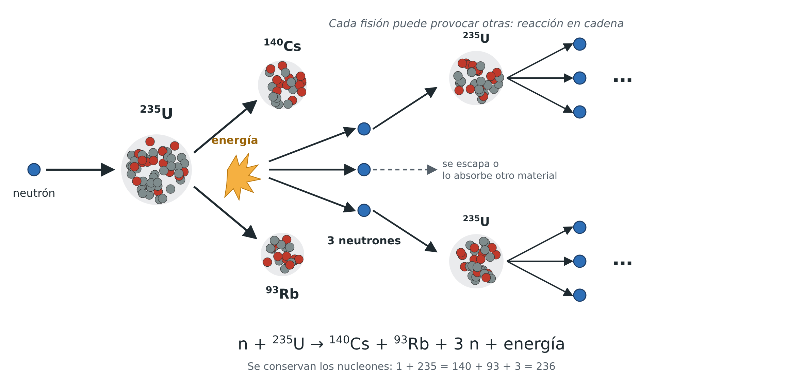
AmpliarCombustible nuclear
En un reactor nuclear se utiliza como combustible el uranio, que tiene 92 protones en su núcleo. Sin embargo, los átomos fisionables de uranio son los correspondientes al isótopo uranio-235, que tiene 143 neutrones en su núcleo.
El uranio natural tiene una concentración de uranio-235 del 0,72 %, que es muy baja. Para fabricar el combustible nuclear se necesita una concentración de entre un 3 y un 5 %, por lo que hay que separar el uranio natural según sus isótopos. El uranio obtenido con mayor concentración de U-235 se denomina uranio enriquecido y la fracción resultante (que tiene incluso menos del 0,72 %) se llama uranio empobrecido.
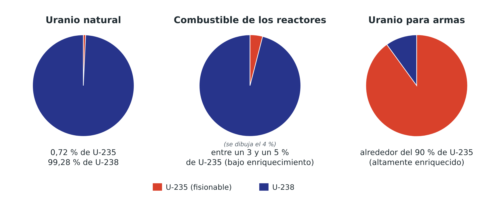
Reactor nuclear
En una central nuclear nos interesa producir y controlar una reacción de fisión, para que la cantidad de fisiones que se produzcan permanezca constante en el tiempo y la reacción se mantenga en la potencia que queramos. Para ello se diseñan los llamados reactores nucleares.
El reactor consta de una vasija de acero en cuyo interior se dispone un conjunto de elementos de combustible nuclear siguiendo un cierto patrón geométrico. Además del combustible, suele ser necesario incluir una sustancia que actúa como moderador de la reacción, “frenando” a los neutrones que se liberan en las fisiones. Los neutrones lentos (térmicos) fisionan los núcleos de uranio-235 con mucha más probabilidad que los rápidos, y gracias a eso la reacción en cadena se mantiene con uranio poco enriquecido. En las centrales españolas se utiliza como moderador agua ligera.
Para regular la velocidad a la que se producen las fisiones en el reactor, se dispone de unas barras de control que contienen un elemento que absorbe los neutrones. Cuanto más se introduzcan estas barras en el reactor, más neutrones se absorben, reduciéndose el número de fisiones. En caso de una emergencia o de un corte de electricidad en el reactor, las barras se introducen completamente en el reactor, deteniendo la reacción en cadena y produciendo la parada automática, “disparo” o “scram” del reactor.
Aunque las barras paren la reacción en cadena, el combustible sigue desprendiendo calor durante mucho tiempo, porque los productos de la fisión son radiactivos: es el calor residual. Justo después de la parada es alrededor del 6,5 % de la potencia térmica que tenía el reactor (unos 200 MW en un reactor de 1000 MW eléctricos); a la hora todavía es el 1,5 % y al cabo de un día, el 0,4 %. Por eso hay que seguir refrigerando el reactor durante días, con bombas que, si falla la red eléctrica, funcionan con generadores diésel de emergencia. En Fukushima (2011) los reactores se pararon bien con el terremoto, pero el tsunami inundó esos generadores y, sin refrigeración, el calor residual fundió los núcleos de tres reactores.
El reactor de una central nuclear está rodeado de un blindaje de hormigón que intercepta las radiaciones ocasionadas en las reacciones de fisión. Tanto el reactor como los sistemas auxiliares se disponen dentro de un edificio diseñado para limitar las emisiones de radiación en caso de accidente y que se conoce como edificio de contención.
Generación del vapor
La energía producida por las reacciones de fisión se utiliza para generar el vapor que alimenta la turbina de la central nuclear. En España existen dos tipos de centrales nucleares en operación cuya diferencia fundamental estriba en si la generación de vapor tiene lugar fuera (PWR) o dentro (BWR) del reactor:
PWR (Reactor de agua a presión)
El agua del reactor se calienta (no alcanza nunca la ebullición), y va a un intercambiador de calor independiente (generador de vapor), donde se genera el vapor necesario para alimentar al grupo turbina-alternador.
El combustible nuclear calienta el agua del circuito primario. El agua calentada pasa hacia un intercambiador de calor llamado generador de vapor, donde el calor del agua del circuito primario se transfiere hacia el agua del circuito secundario para convertirla en vapor. La transferencia de calor se lleva a cabo sin que el agua del circuito primario y del secundario se mezclen ya que el agua del circuito primario es radioactiva, mientras que es necesario que el agua del secundario no lo sea. El agua volverá nuevamente a la vasija del reactor mediante bombas.
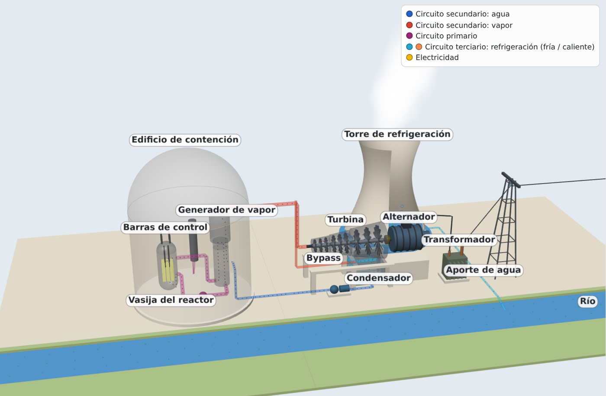
AmpliarEl vapor que sale del generador de vapor se utiliza para mover una turbina que, a su vez, mueve un generador eléctrico (alternador). El generador eléctrico está conectado a la red de distribución eléctrica.
Tras pasar por la turbina, el vapor se enfría en un condensador donde se tiene agua líquida que es bombeada nuevamente hacia el generador de vapor.
El condensador es enfriado por un tercer circuito de agua llamado circuito terciario.
En un PWR, por tanto, hay tres circuitos de refrigeración (primario, secundario y terciario), que utilizan agua ordinaria (también llamada agua ligera).
BWR (Reactor de agua en ebullición)
Se emplea agua ligera como moderador y refrigerante. El refrigerante alcanza la temperatura de ebullición al pasar por el núcleo del reactor. Parte del líquido se transforma en vapor y éste se conduce directamente hacia el grupo turbina-alternador sin necesidad de emplear un generador de vapor.
![Captura de la simulación de la central nuclear de agua en ebullición (BWR). Dentro del edificio de contención está la vasija del reactor: el agua hierve al pasar por el núcleo, el separador de vapor lo seca en la parte alta de la vasija y el vapor va directamente a la turbina, que mueve el alternador. Las barras de control entran por abajo. El vapor que sale de la turbina se condensa en el condensador, enfriado con el agua de la torre de refrigeración, y la bomba devuelve el agua a la vasija. No hay generador de vapor.](../content/resources/central_bwr_3d.png)
Tras esto el vapor que sale de la turbina pasa por un condensador que lo enfría obteniéndose nuevamente agua líquida, la cual es impulsada mediante bombas de nuevo hacia el interior de la vasija que contiene el núcleo.
Los reactores PWR son los más extendidos en el mundo y también en España, donde seis de los siete reactores son de este tipo.
Vídeo para ampliar: cómo funciona una central nuclear de agua a presión
En este vídeo puedes ver con más detalle el funcionamiento de una central de tipo PWR, el más común:
En la simulación de la central térmica de esta página puedes elegir también un reactor de agua a presión (PWR) o de agua en ebullición (BWR) y ver qué pasa con el calor cuando se dispara el reactor.
Las centrales nucleares suelen utilizarse para generar energía eléctrica de forma constante, funcionando al 100 % de su capacidad. Aunque pueden regular su carga mediante las barras de control, el proceso no es tan rápido como en las centrales de ciclo combinado. Además, los reactores nucleares suelen tener potencias muy elevadas (del orden de 1 GW). En España hay unos 7 GW de potencia nuclear instalada, que funcionan casi sin parar, salvo en las paradas programadas para mantenimiento o recarga de combustible. En 2025 produjeron el 19 % de la electricidad del país.
En España hay 5 centrales nucleares, con un total de 7 reactores:
| Central | Reactor | Potencia eléctrica (MW) | Tipo | Puesta en marcha |
|---|---|---|---|---|
| Almaraz (Cáceres) | Almaraz I | 1049,40 | PWR | 1983 |
| Almaraz II | 1044,50 | PWR | 1984 | |
| Ascó (Tarragona) | Ascó I | 1032,50 | PWR | 1984 |
| Ascó II | 1027,21 | PWR | 1986 | |
| Cofrentes (Valencia) | Cofrentes | 1092,02 | BWR | 1985 |
| Vandellós (Tarragona) | Vandellós II | 1087,14 | PWR | 1988 |
| Trillo (Guadalajara) | Trillo | 1066,00 | PWR | 1988 |
Como ves, las centrales nucleares españolas tienen ya casi cuarenta años o más. El calendario de cierre pactado entre el Gobierno y las empresas propietarias prevé cerrarlas de forma escalonada hasta 2035, cuando debería cerrar la última, Trillo. Ese calendario ya ha cambiado una vez: en agosto de 2026 el Gobierno autorizó que los dos reactores de Almaraz, que iban a cerrar en 2027 y 2028, sigan funcionando hasta junio de 2030, después de un informe favorable del Consejo de Seguridad Nuclear. Sustituir estos 7 GW por renovables exige más almacenamiento de energía y más redes eléctricas, y por eso el calendario sigue en debate.
Impacto ambiental y debate sobre la energía nuclear
Como no queman ningún combustible, estas centrales no emiten CO2 ni otros gases contaminantes mientras funcionan. Sus residuos, en cambio, son radiactivos durante miles de años, por lo que hay que almacenarlos con grandes medidas de seguridad para evitar fugas al entorno.
El futuro de la energía nuclear es un debate abierto, también en España. Estos son los argumentos principales de cada parte:
- A favor de mantenerla: produce electricidad de forma constante, de día y de noche, sin emitir CO2. Mientras no haya almacenamiento suficiente para las renovables, cerrar centrales nucleares puede obligar a quemar más gas en los ciclos combinados.
- A favor de cerrarla: sus residuos hay que custodiarlos durante miles de años, existe el riesgo de un accidente grave (como los de Chernóbil en 1986 y Fukushima en 2011) y construir, mantener y desmantelar una central es muy caro. Además, es poco flexible para acompañar a unas renovables que suben y bajan con el sol y el viento.
Cada país ha tomado su camino. Alemania decidió cerrar sus centrales tras el accidente de Fukushima y apagó las últimas en abril de 2023, mientras que Francia sigue obteniendo de la nuclear la mayor parte de su electricidad.
Para pensar
¿Alargarías o no la vida de las centrales nucleares españolas? Defiende tu postura con al menos un dato del mix eléctrico y uno de esta página.
Ordena
Ordena el camino de la energía en una central térmica, desde el combustible hasta la red.
- El combustible guarda energía química
- En la caldera, la combustión convierte el agua en vapor: energía térmica
- El vapor mueve la turbina: energía mecánica de rotación
- El alternador, unido a la turbina, produce energía eléctrica
- El transformador eleva la tensión para transportarla
- La red de transporte lleva la electricidad a los lugares de consumo